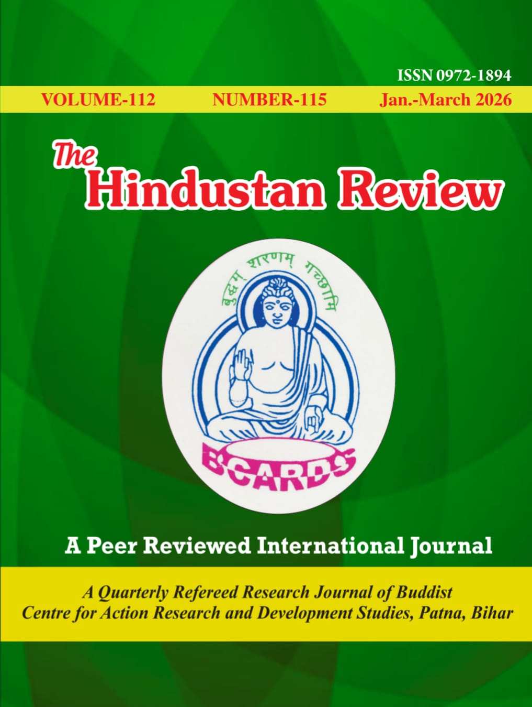
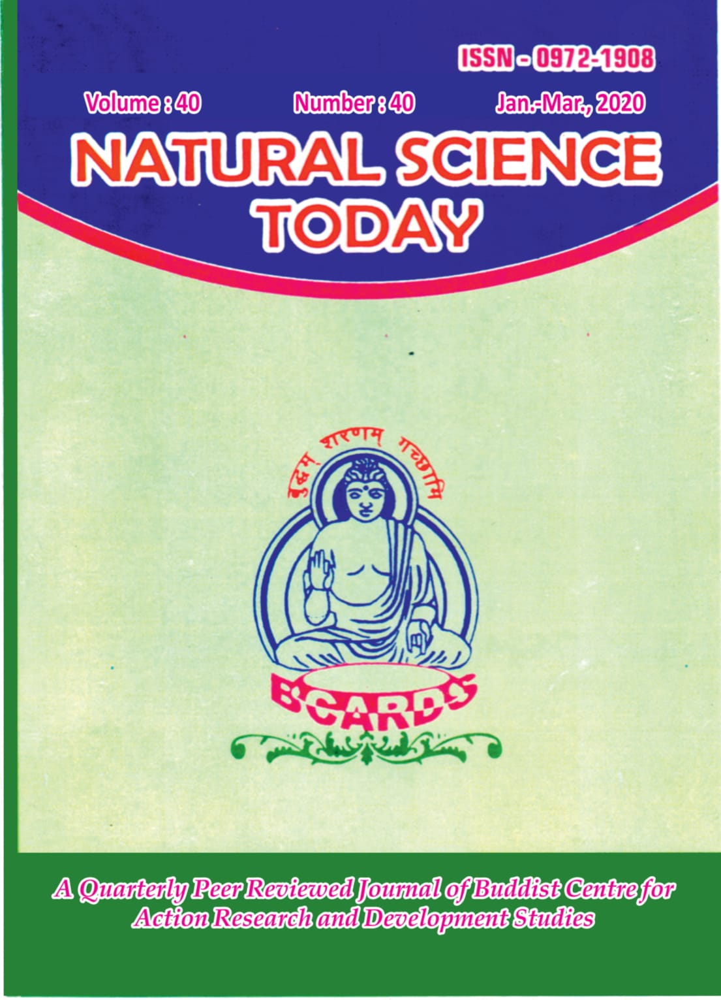

"A high level research publication and counselling institute devoted to multi-disciplinary studies in different branches of Indian and Buddhist Learning!"
BCARDS — the Buddhist Centre for Action Research and Development Studies — is a registered academic institute dedicated to promoting high-level scholarly research and counselling across the broad continuum of Indian and Buddhist learning.
Established and registered under the Societies Registration Act (XXI of 1860, New Delhi; S‑32069/97), the Centre has consistently championed interdisciplinary inquiry, bringing together researchers, educators, and scholars from across India and the world.
Through its two flagship peer-reviewed publications, BCARDS advances knowledge spanning the humanities, social sciences, and natural sciences — nurturing academic discourse rooted in India's rich civilisational heritage while embracing the full scope of contemporary inquiry.
"A high level research publication and counselling institute devoted to multi-disciplinary studies in different branches of Indian and Buddhist Learning!"
Advancing scholarship across Indian studies, Buddhist philosophy, social sciences, and natural sciences under one scholarly roof.
Both journals are open-access, reaching scholars and researchers worldwide without subscription barriers.
All submissions undergo a double-blind peer review process, ensuring academic integrity and scholarly excellence.
Beyond publication, BCARDS offers academic counselling and mentorship to researchers at every stage of their scholarly journey.
Two flagship open-access journals publishing original research for an international scholarly readership

A multidisciplinary, international journal exploring Indian culture, Buddhist studies, history, politics, literature, and social issues.
View All Issues →
Cutting-edge international, peer-reviewed research in Physics, Chemistry, Biology, Environmental Science, Mathematics & allied fields.
View All Issues →BCARDS fosters scholarship across a wide spectrum of disciplines rooted in Indian and global traditions of knowledge
Buddhist thought, Pali and Sanskrit texts, Dharma traditions, Theravada and Mahayana scholarship, and comparative religion.
Ancient and medieval India, archaeology, epigraphy, art history, cultural heritage, and civilisational continuity.
Sociology, political science, economics, public policy, development studies, and governance research.
Literary criticism, Hindi and Indian languages, classical texts, folk traditions, aesthetics, and cultural expression.
Physics, Chemistry, Biology, Environmental Science, Mathematics, and allied natural and applied sciences.
Academic mentorship, thesis guidance, research design support, and scholarly development for emerging researchers.
We welcome original research across all disciplines covered by our journals. All submissions undergo rigorous double-blind peer review and are published open-access for a global readership.